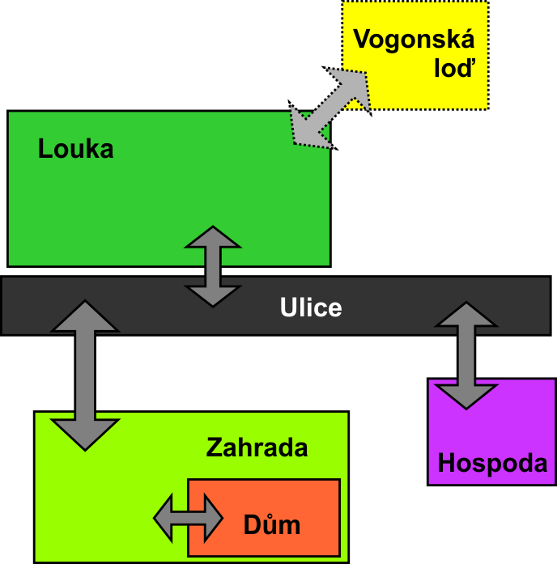

Jedná se o adaptaci úvodních kapitol románu Douhlase Adamse Stopařův průvodce galaxií.
Hráč ovládá postavu Forda Prefecta, který se snaží zachránit svého přítele Arthura Denta z planety Země, která je odsouzena k demolici kvůli výstavbě hyperprostorové expresní dálnice. Jeho cílem je spolu s Arthurem nastoupit na jednu z Vogonských lodí dříve než bude Země zničena. Při tom musí překonat nejedno úskalí a překážku...
Hra se snaží co nejvěrněji držet knižní předlohy, resp. jejího českého vydání. Její znalost výrazně usnadňuje její dokončení.
V poslední třetině hry jsou zavedena omezení na počet možných zadaných příkazů a uplnulý reálný čas.
Hráč začíná v prostoru Louka

Použití: arthur název_povelu
Popis: Umožňuje dávat Arthurovi povely. Arthur vyková tyto příkazy:
Použití: jdi název_prostoru
Popis: Přesun postavy mezi herními prostory.
Použití: konec
Popis: Předčasně ukončí hru.
Použití: ?
Popis: Vypíše nápovědu.
Použití: polož předmět_z_tašky
Popis: Položí předmět z hráčovy tašky do aktuálního prostoru.
Použití: použij předmět_z_tašky
Popis: Použije vybraný předmět z hráčovy tašky. Použití některých předmětů je klíčové, jiné slouží jako nepovinné zpestření.
Použití: promluv jméno_osoby
Popis: Zahájí rozhovor s postavou daného jména. Rozhovory jsou klíčovou součástí hry, nezbytnou pro její dokončení.
Použití: předej předmět_z_tašky jméno_osoby
Popis: Předá předmět z hráčovy tašky do inventáře osoby daného jména
Použití: seber předmět_z_prostoru
Popis: Sebere předmět z aktuálního prostoru a pokud je to možné, tak vloží do hráčovy tašky.
Použití: vezmi požadovaný_předmět_od_osoby jméno_osoby
Popis: Vezme předmět z inventáře dané osoby a pokud je to možné tak vloží do hráčovy tašky.
Poznámka k příkazům Předej a Vezmi: Některé předměty po vložení do inventáže osob už nejdou zpět vzít, nebo se v inventáži mohou objevovat nové předměty.
Pro dokončení hry je důležité provést tyto kroky: